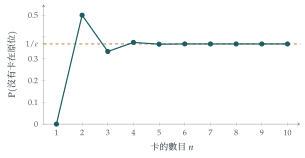

STEP II 2016，第 12 題
繼續之前，請先閱讀題目（原題為英文）。題目載於 STEP Support Programme 的題目資料庫： step.maths.org/questions/16-s2-q12
引子
一支十一人的足球隊匆忙更衣，各人隨手抓起一件球衣就穿。沒有任何人穿上自己球衣的機會有多大？再設想那是一支五十人的大軍，甚至是一百萬人的人羣。人多了，出錯的人也多了，機會是否隨之上升？還是因為有更多人可能碰巧拿對，機會反而下降？出人意料的是，這個機會幾乎完全不變：由五個人開始，它與 \(1/e \approx 0.368\) 的差距不超過半個百分點。
這是組合概率（combinatorial probability）中最古老的問題，由 Pierre de Montmort 於 1708 年提出，稱為 problème des rencontres（相遇問題）。本題以容斥原理（inclusion–exclusion principle）解決這個問題；容斥原理是點算互相重疊的事物的工具，而所得的答案，是 \(e\) 在數學中最令人意想不到的現身之一。
動筆之前
先試 \(n = 3\)：列出卡 \(1, 2, 3\) 的全部六種次序，數一數其中有多少種是沒有任何一張卡在自己位置上的。如果你有耐性，再試 \(n = 4\)（共有 \(24\) 種次序）。
當 \(n = 3\) 時，只有 \(231\) 和 \(312\) 沒有任何卡在自己的位置上，所以概率是 \(\frac26 = \frac13\)。當 \(n = 4\) 時，\(24\) 種次序中有 \(9\) 種符合條件，概率為 \(\frac38 = 0.375\)。沒有任何一張卡留在原位的排列，稱為錯排（derangement）。
逐步解題
階段 1 三個事件的容斥原理
怎樣把 \(A \cup B \cup C\) 寫成兩個事件的併集（union），使兩個事件的公式可以派上用場？
把 \(A \cup B\) 看成單一事件，對它和 \(C\) 應用公式： \[\mathrm{P}(A \cup B \cup C) = \mathrm{P}(A \cup B) + \mathrm{P}(C) - \mathrm{P}\bigl((A \cup B) \cap C\bigr).\] 現在 \((A \cup B) \cap C = (A \cap C) \cup (B \cap C)\)，再應用一次公式，得 \(\mathrm{P}\bigl((A \cap C) \cup (B \cap C)\bigr) = \mathrm{P}(A \cap C) + \mathrm{P}(B \cap C) - \mathrm{P}(A \cap B \cap C)\)。把 \(\mathrm{P}(A \cup B)\) 也展開，再合併各項，便得出結果。■
四個事件時，規律依舊：把四個單一事件的概率相加，減去六個兩兩交集（intersection）的概率，加上四個三重交集的概率，再減去 \(\mathrm{P}(A \cap B \cap C \cap D)\)。
階段 2 各個概率
如果卡 \(i\) 在位置 \(i\)，其餘的卡有多少種排法？如果卡 \(i\) 和卡 \(j\) 都固定了呢？
共有 \(n!\) 種機會均等的次序。如果卡 \(i\) 固定在位置 \(i\)，其餘 \(n - 1\) 張卡可以任意排列：共 \((n - 1)!\) 種排法。所以 \[\begin{gathered} \mathrm{P}(E_i) = \frac{(n - 1)!}{n!} = \frac{1}{n}, \qquad \mathrm{P}(E_i \cap E_j) = \frac{(n - 2)!}{n!} = \frac{1}{n(n - 1)}, \\ \mathrm{P}(E_i \cap E_j \cap E_k) = \frac{(n - 3)!}{n!} = \frac{1}{n(n - 1)(n - 2)}. \end{gathered}\] 一般而言，指定的 \(k\) 張卡全部在自己位置上的概率是 \(\frac{(n - k)!}{n!}\)。
階段 3 加起來
在 \(\mathrm{P}(E_1 \cup \cdots \cup E_n)\) 的容斥公式中，涉及 \(k\) 個事件交集的項有多少個？它們的總和是多少？
從這些事件中選出 \(k\) 個，有 \(\binom{n}{k}\) 種方法，而每個交集的概率都是 \(\frac{(n - k)!}{n!}\)。所以各個 \(k\) 重項的總和是 \[\binom{n}{k}\frac{(n - k)!}{n!} = \frac{n!}{k!\,(n - k)!}\cdot\frac{(n - k)!}{n!} = \frac{1}{k!}.\] 除了 \(k!\) 之外，全部約去。配上正負相間的符號， \[\mathrm{P}(\text{最少有一張卡在自己的位置上}) = 1 - \frac{1}{2!} + \frac{1}{3!} - \cdots + (-1)^{n+1}\frac{1}{n!}. \qed\] 所以出現錯排的概率是 \[d_n = 1 - 1 + \frac{1}{2!} - \frac{1}{3!} + \cdots + (-1)^n\frac{1}{n!} = \sum_{k=0}^{n}\frac{(-1)^k}{k!}.\]
階段 4 恰好一張
要恰好有一張卡在原位，是哪一張卡？其餘的卡又必須怎樣？
先選定哪一張卡在自己的位置上（\(n\) 種選法）。卡 \(i\) 在原位的概率是 \(\frac1n\)；在這個條件下，其餘 \(n - 1\) 張卡必須在它們之間形成一個錯排，其概率為 \(d_{n-1}\)。所以 \[\mathrm{P}(\text{恰好一張}) = n \cdot \frac{1}{n} \cdot d_{n-1} = \sum_{k=0}^{n-1}\frac{(-1)^k}{k!}. \qed\]
回顧
先多算，再修正。把各個 \(\mathrm{P}(E_i)\) 相加，會把有兩張卡固定的排列算了兩次；減去兩兩交集的項可以修正，但對三張卡固定的情況又減得太多；如此類推。
對稱性令各項相等。每個 \(k\) 重交集的概率都相同，所以公式的每一層都是一個數乘以一個二項式係數（binomial coefficient）。
化為較小的情況。「恰好一張」變成了 \(n - 1\) 張卡的錯排。
背後的數學
\(e\) 從何而來
級數 \(\sum (-1)^k/k!\) 就是指數級數（exponential series）\(e^x = \sum x^k/k!\) 在 \(x = -1\) 時的值。所以當 \(n \to \infty\) 時， \[d_n \to e^{-1} \approx 0.3679,\] 而恰好有一張卡對上的概率也趨向同一個極限。收斂（convergence）的速度快得驚人（圖 9.8.1）：在 \(1/n!\) 一項停下來所產生的誤差小於 \(1/(n + 1)!\)，所以在 \(n = 7\) 時，答案已經與 \(1/e\) 吻合至小數點後四位。事實上，\(n\) 件物件的錯排數目 \(n!\,d_n\) 恰好是最接近 \(n!/e\) 的整數。

對上的數目服從泊松分佈
結論還不止於此。設 \(N\) 為在自己位置上的卡的數目。那麼對每個 \(k\)，都有 \(\mathrm{P}(N = k) \to \frac{e^{-1}}{k!}\)：在極限之下，對上的數目服從平均值為 \(1\) 的泊松分佈（Poisson distribution）。平均值為甚麼是 \(1\)，不用任何計算也看得出來：\(N\) 是 \(E_1, \ldots, E_n\) 的指示變量（indicator）之和，每個的期望值（expectation）都是 \(\frac1n\)，而即使這些事件並非獨立，期望值仍然可以相加。STEP III 2004 Q12（見練習）證明方差（variance）同樣是 \(1\)。每當有許多機會很微、又近乎獨立的事件時，泊松分佈就會出現；錯排是一個經典例子，也是第 12 章 第 12.11 節 的主題。
Pierre Rémond de Montmort 是一位法國貴族，他在著作 Essay d’analyse sur les jeux de hazard（1708）中研究各種博彩遊戲。在 treize（十三）這個遊戲中，玩家派出十三張牌，同時口中數着「一、二、三……」，只要有一次派出的牌與所數的數字相同，便算勝出。Montmort 求出了勝出的概率，並在與尼古拉·伯努利（Nicolaus Bernoulli）的通信中，於 1713 年或之前確立了一般公式。歐拉（Euler）在 1753 年重新發現了這條公式。容斥原理其後由棣莫弗（Abraham de Moivre）加以形式化，而它的一般形式則由西爾維斯特（James Joseph Sylvester）在十九世紀建立。
思維技巧
要點算互相重疊的集合的併集，先把各集合的大小相加，減去兩兩重疊的部分，加上三重重疊的部分，如此類推。
當對稱性令同一大小的重疊部分全部相等時，這個方法最見威力，本題正是如此。在大學裏，它會在組合數學（combinatorics）、概率論和數論（number theory）中出現；在數論中，它用來點算不能被一系列質數中任何一個整除的整數，並由此引出歐拉函數（Euler’s totient function）和默比烏斯函數（Möbius function）。
延伸練習
球衣。試做 STEP III 2004，第 12 題。這道題用指示變量點算穿上自己球衣的球員人數，求出平均值和方差，並把結果與泊松分佈比較。
遞推關係。設 \(D_n\) 為 \(n\) 件物件的錯排數目。考慮卡 \(1\) 去了哪個位置，以及原本在該位置的卡是否去了位置 \(1\)，證明 \(D_n = (n - 1)(D_{n-1} + D_{n-2})\)。用 \(D_3 = 2\)、\(D_4 = 9\) 驗算。
恰好 \(k\) 張。證明恰好有 \(k\) 張卡在自己位置上的概率是 \(\frac{1}{k!}d_{n-k}\)，並且它趨向 \(\frac{e^{-1}}{k!}\)。
互質的整數。用容斥原理點算由 \(1\) 至 \(30\) 的整數中，不能被 \(2\)、\(3\) 和 \(5\) 任何一個整除的有多少個。你的答案與 \(30\bigl(1 - \frac12\bigr)\bigl(1 - \frac13\bigr)\bigl(1 - \frac15\bigr)\) 有甚麼關係？
延伸閱讀
Geoffrey Grimmett & Dominic Welsh, Probability: An Introduction（Oxford University Press）。大學一年級教科書，涵蓋容斥原理和配對問題。
William Feller, An Introduction to Probability Theory and Its Applications, Vol. 1（Wiley），第 IV 章。經典之作，載有配對問題的許多變化。
Miklós Bóna, A Walk Through Combinatorics（World Scientific），關於容斥原理的部分。